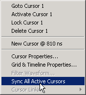

You can synchronize
the active cursors within all open Wave windows and the Wave viewers
in the Dataflow and Schematic windows.
Procedure
- Right-click the time value
of the active cursor in any window and select Sync All Active Cursors
from the popup menu (Figure 1).
Figure 1. Sync All Active Cursors
- When all
active cursors are synced, moving a cursor in one window will automatically
move the active cursors in all opened Wave windows to the same time
location. This option is also available by selecting in
the menu bar when a Wave window is active.